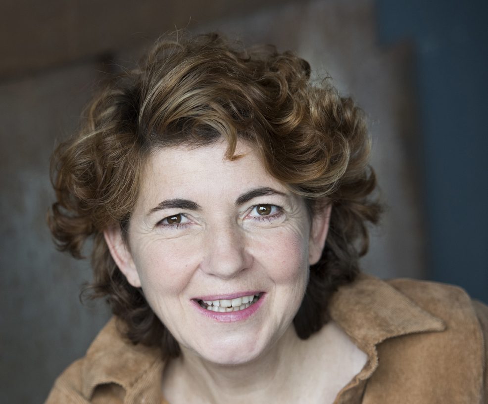

CLAIRE AUGÉ
Artiste contemporaine
Une pratique guidée par le geste, la lumière et l’émotion.

PARCOURS
Du trait intime à la matière.
Le travail de Claire Augé traverse le dessin numérique, le portrait, la ligne et la peinture. Le support change, mais le geste demeure : instinctif, direct, lié à une sensation intérieure.
Les premiers visages deviennent peu à peu plus denses, fragmentés ou masqués. Puis le visage s’efface et le geste prend toute la place. La couleur, la lumière et la matière deviennent à leur tour des sujets.